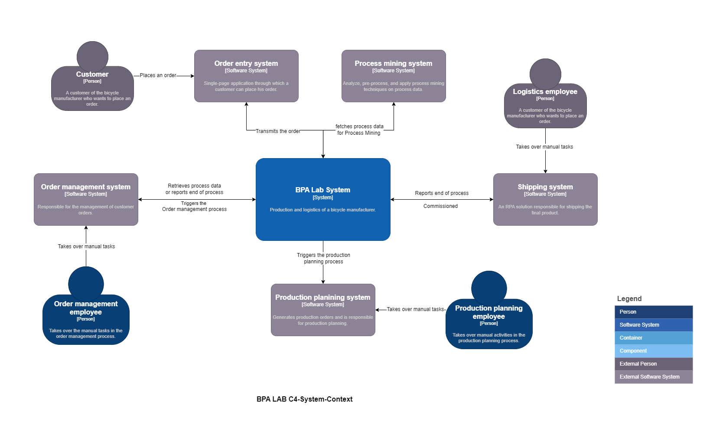
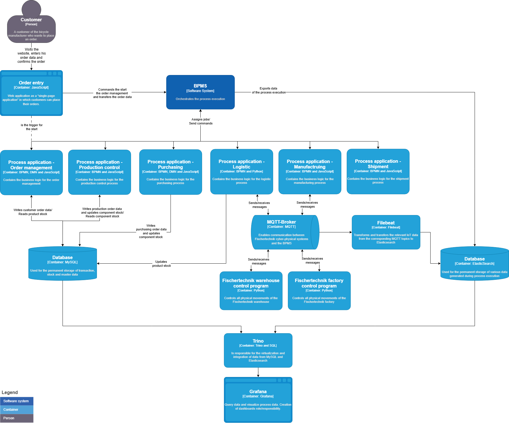

4 Software Architecture
The architecture is under continuous development. Several aspects are still being discussed. This chapter captures the current state.
4.1 Requirements
The following high-level requirements were gathered at the very beginning of the BPA Lab project (originally as part of a thesis project). They served as the basis for the first software architecture and remain the reference point against which architectural choices are evaluated.
4.1.1 R1 — Independent operation of components
The individual components and processes should be able to run independently of each other. Each process must be startable on its own, without depending on a triggering instance from a higher layer.
4.1.2 R2 — Integration of external IT systems
The system must allow integration with existing IT components — for example with the web application used for order capture, or with tools that flexibly extract data for process mining and analytics.
4.1.3 R3 — Clear and distinct responsibilities
The responsibilities of individual components must be clearly defined and demarcated from one another, so that the system remains understandable as it grows.
4.1.4 R4 — Easy extensibility
The system must be easy to extend with additional, self-developed components.
4.1.5 R5 — Interchangeability and independent evolution
Components must be developable, deployable, and replaceable independently of one another.
4.1.6 R6 — Comprehensive and flexible process data capture
Process data must be comprehensively capturable. It must be stored and made flexibly available for a range of analytical use cases — in particular process mining.
4.1.7 R7 — User-friendliness (operator perspective)
The user interface must be intuitive and easy to understand, ensuring a positive user experience for those interacting with the lab during demonstrations and student sessions.
4.1.8 R8 — Easy installation and low infrastructure requirements (developer perspective)
The system must be easy to install. Students must be able to host their own instances on standard laptops without specialised infrastructure.
4.1.9 R9 — Robustness
The architecture must be robust. Failures must be minimised and reliable functionality must be ensured under a wide range of operating conditions.
4.1.10 R10 — Maintainability and operation
The system must be easy to maintain over its lifetime.
4.2 Architecture in the C4 model
The architecture is documented using the C4 model (Brown 2018) — a notation for describing software systems at different levels of abstraction: Context, Container, Component, and Code. Note that containers in the C4 sense are not the same as Docker containers.
4.2.1 Context diagram
The context diagram shows the BPA Lab in relation to its users and external systems.

4.2.2 Container diagram
The container diagram shows the main technical building blocks of the BPA Lab and how they interact.

4.3 Mapping requirements to architecture
The following table illustrates how individual requirements are addressed by architectural choices. It is not exhaustive — but it shows the line of reasoning from requirement to design.
| Requirement | Realisation in the architecture |
|---|---|
| R1 — Independent operation | Loose coupling via MQTT and gRPC; self-contained job workers |
| R2 — Integration of external systems | Standard protocols (REST, MQTT, gRPC); Camunda connector concept |
| R3 — Clear responsibilities | Domain-driven separation of job workers and process models |
| R6 — Process data capture | Camunda 8 as central event hub; MySQL for operational data |
| R8 — Easy installation | Docker Compose setup; self-managed Camunda 8 Core |
| R5/R9 — Interchangeability / robustness | Asynchronous messaging; clear interfaces between layers |
4.4 Architecture decisions
The remainder of this chapter records selected architecture questions raised during the BPA Lab project, together with the corresponding decisions and justifications. The list is not exhaustive and is updated as the lab evolves.
Each decision follows a lightweight ADR (Architecture Decision Record) schema: context, decision, and rationale are captured succinctly.
4.4.1 ADR-001 — MQTT broker for job-worker–controller communication
Status: Decided.
Decision: A MQTT broker is used for communication between process applications (job workers) and controllers.
Rationale:
- decoupling of senders and receivers through the publish-subscribe pattern,
- MQTT is a well-established standard protocol in the IoT space,
- lightweight footprint, well suited to the hardware components in use.
4.4.2 ADR-002 — Message Send/Receive Tasks instead of Events for inter-process communication
Status: Decided.
Decision: Inter-process communication is modelled in BPMN using Message Send Tasks and Message Receive Tasks, not events.
Rationale:
- Tasks allow the use of boundary events — for example to handle errors raised by job workers,
- complex error paths and timeouts are easier to express.
4.4.3 ADR-003 — Messaging between processes and process applications
Status: Decided.
Decision: Communication between processes and process applications is implemented using messages as well.
Rationale:
- a simple, uniform solution,
- consistent with the communication pattern between process applications and process control.
4.4.4 ADR-004 — Camunda 8 self-managed with Docker Compose (Camunda 8 Core)
Status: Decided.
Decision: The self-managed variant of Camunda 8 is used in combination with Docker Compose and Camunda 8 Core.
Rationale:
- avoids interferences between contributors during the development phase,
- development and production-like environments are identical,
- Kubernetes is intentionally not used — the BPA Lab is not a production environment in the classical sense.
Open question: Performance with Docker and the resulting number of containers needs to be verified as the system grows.
4.4.5 ADR-005 — Job worker for sending emails
Status: Decided (reversible).
Decision: Email sending is implemented through a dedicated job worker rather than via the SendGrid connector.
Rationale:
- issues encountered with the SendGrid connector at the time of the decision,
- an existing solution was already in place in the project,
- to be re-evaluated as Camunda 8 connectors continue to evolve.
4.4.6 ADR-006 — Job worker for database transactions; MySQL in a Docker container
Status: Decided.
Decision: Database transactions are handled by a dedicated job worker; the MySQL database runs in a Docker container.
Rationale:
- existing solution available in the project,
- greater flexibility than the connectors available at the time of the decision.
4.5 Reflection questions
- ADR-001 selects MQTT. What alternative protocols could have been considered, and what trade-offs would they imply?
- ADR-005 is explicitly marked as reversible. Which criteria would you use to decide whether to switch back to a connector-based solution?
- ADR-004 deliberately avoids Kubernetes. Under which circumstances would that decision need to be revisited?
4.6 Going deeper
The original sources on the C4 model — including examples, decision records, and tools like Structurizr — are available at https://c4model.com/. For a deeper dive into Domain-Driven Design as the principle behind the modular separation, see Evans (Evans 2003).